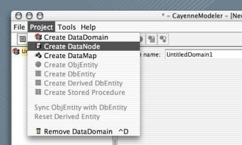
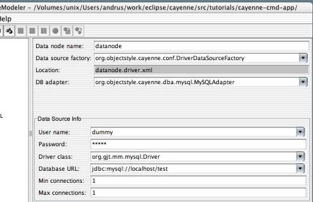

|
LOCAL DOCS
ONLINE RESOURCES |
| 4. Common Modeling Tasks
4.2 Create DataNode Prerequisites. Start CayenneModeler and create a new project or open an existing one. Create DataNode. DataNodes (or in other words, database server connections or physical data sources) are associated with DataDomains (logical data sources). Select one of the DataDomains on the left hand tree. Select "Project -> Create DataNode" menu item or click on "New DataNode" icon: This will create a new DataNode under the selected domain. After the DataNode is created, you can assign it any name you want instead of the default "UntitledDataNode1". Configure Data Source Factory. Depending on how you plan to deploy this Cayenne project, make a selection from the "Data source factory" dropdown. Select JNDIDataSourceFactory if you plan to obtain DataSource via JNDI from deployment container. Select DriverDataSourceFactory to use JDBC driver.
Configure DataNode Location. Location field of the JNDI DataNode is a JNDI lookup name for the javax.sql.DataSource object that should be available from the container at the runtime. Type this JNDI name into the "Location" field. For driver nodes location is a path to the XML file that stores connection information, relative to the project (cayenne.xml) directory. This field is not editable and is derived from the name of the DataNode. Configure DB Adapter. As mentioned in Cayenne User Guide, various RDBMS engines require special handling of some operations. Cayenne abstracts these differences by implementaing a set of database-specific adapters. An adapter must be selected from a "DB adapter" dropdown regardless whether the DataNode is using JNDI or Driver factory. Standard adapters distributed with Cayenne (including a generic JDBCAdapter) are listed in the dropdown. If you created your own adapter, type the full class name of a class that implements DbAdapter interface instead. Configure Connection Information (Driver factory only). Type connection user name, password, JDBC driver class, and database URL in the fields provided:  |
| Copyright ©2001-2004 ObjectStyle Group |